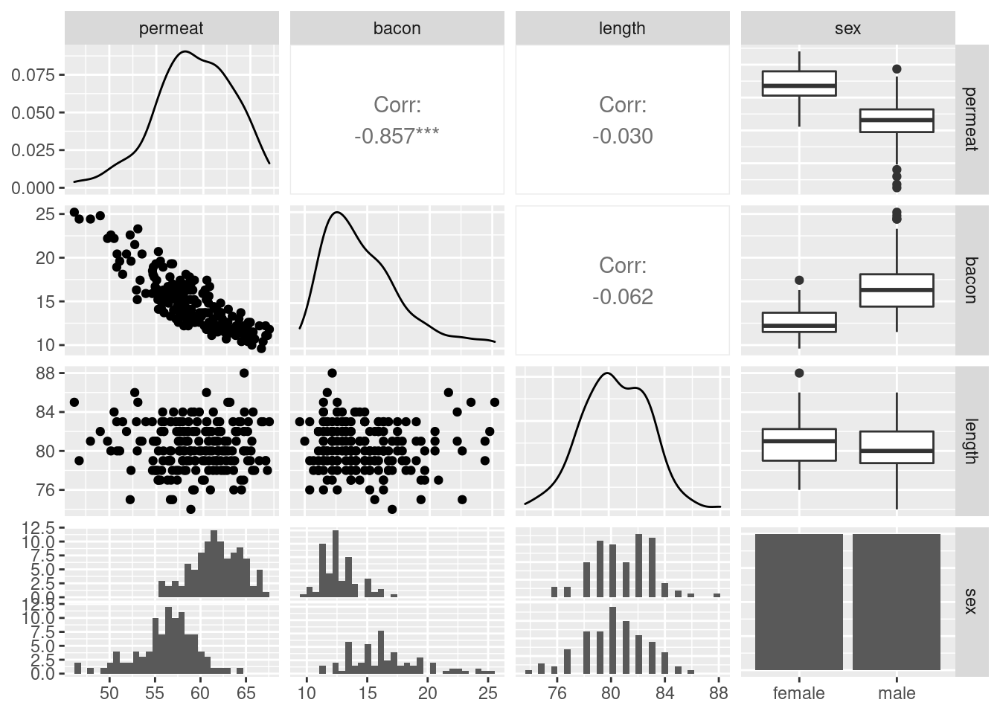
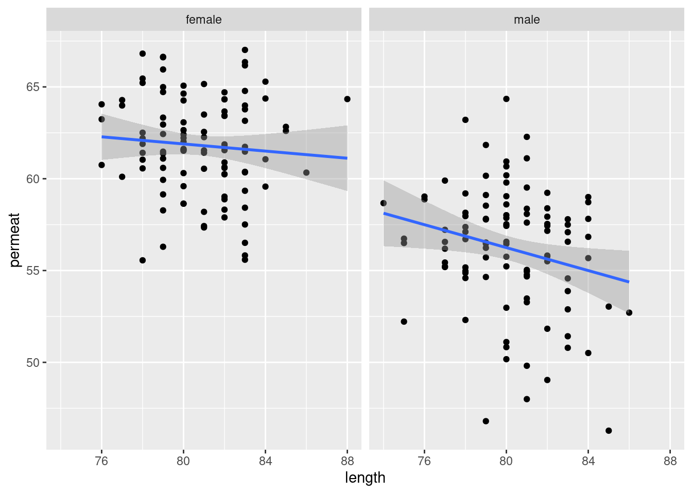
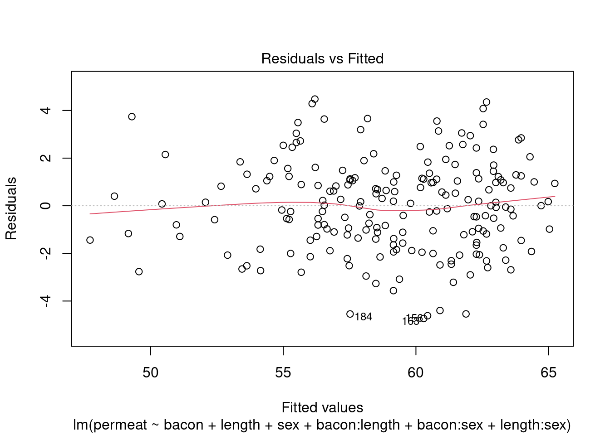
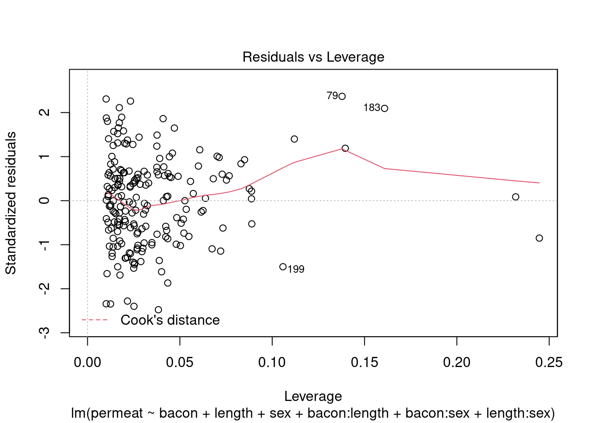

Examenvoorbeeld vraag 1
Lieven Clement, Alexandre Segers
statOmics, Ghent University (https://statomics.github.io)

Onderzoekers bestuderen of er een associatie tussen het de dikte van de speklaag van varkens is met het percentage vlees van varkens (permeat). Ze willen ook weten of deze associatie verschilt tussen mannelijke en vrouwelijke varkens. Uit voorgaand onderzoek weten de onderzoekers dat er een associatie is tussen het de lengte van het varken en het percentage vlees.
1 Data exploratie
library(tidyverse)## ── Attaching packages ─────────────────────────────────────── tidyverse 1.3.1 ──## ✔ ggplot2 3.3.5 ✔ purrr 0.3.4
## ✔ tibble 3.1.4 ✔ dplyr 1.0.7
## ✔ tidyr 1.1.3 ✔ stringr 1.4.0
## ✔ readr 1.4.0 ✔ forcats 0.5.1## ── Conflicts ────────────────────────────────────────── tidyverse_conflicts() ──
## ✖ dplyr::filter() masks stats::filter()
## ✖ dplyr::lag() masks stats::lag()library(ggplot2)We lezen de data in, en filteren de data aangezien we het gewicht niet als variabele zullen gebruiken.
pigs <- read.csv(file = "https://raw.githubusercontent.com/statOmics/biostatistics21/master/pigs.csv")
pigs <- pigs %>% subset(select = -weight)head(pigs)dim(pigs)## [1] 200 4library(GGally)## Registered S3 method overwritten by 'GGally':
## method from
## +.gg ggplot2##
## Attaching package: 'GGally'## The following object is masked _by_ '.GlobalEnv':
##
## pigspigs %>%
ggpairs## `stat_bin()` using `bins = 30`. Pick better value with `binwidth`.## `stat_bin()` using `bins = 30`. Pick better value with `binwidth`.
## `stat_bin()` using `bins = 30`. Pick better value with `binwidth`.
Hieruit zien we dat er een duidelijke lineaire associatie is tussen het percentage vlees en de dikte van de speklaag. Er is geen duidelijke associatie tussen het percentage vlees en de lengte van het varken. Wel lijkt er een verschil van percentage vlees te zijn tussen de verschillende geslachten.
We bekijken verder de associaties tussen het percentage vlees en de dikte van de speklaag per geslacht. Dit doen we ook voor de associatie met de lengte.
pigs %>% ggplot(aes(x=bacon,y=permeat)) +
geom_point() +
stat_smooth(method = "lm") +
facet_wrap(~sex)## `geom_smooth()` using formula 'y ~ x'pigs %>% ggplot(aes(x=length,y=permeat)) +
geom_point() +
stat_smooth(method = "lm") +
facet_wrap(~sex)## `geom_smooth()` using formula 'y ~ x'
Het effect van zowel de dikte van de speklaag en de lengte lijkt licht te verschillen tussen mannelijke en vrouwelijke varkens. Er is dus mogelijks een interactie tussen dikte van de speklaag en gender en lengte en gender.
2 Algemeen lineair model opstellen
We modelleren eerst het percentage vlees in functie van alle variabelen, samen met alle tweeweg interactietermen. We modelleren dus eerst: \(E[permeat] = \beta_{bacon} x_{bacon} + \beta_{length} x_{length} + \beta_{sex} x_{sex} + \beta_{bacon:length} x_{bacon} x_{length} + \beta_{bacon:sex} x_{bacon} x_{sex} + \beta_{length:sex} x_{length} x_{sex}\)
Merk op dat je hier geen bacon * length * sex kunt gebruiken, aangezien er dan ook de drieweg-interactie sex:bacon:length zou zijn, wat buiten de scope van de cursus valt.
lm_1 <- lm(permeat ~ bacon + length + sex + bacon:length + bacon:sex + length:sex, data = pigs)
summary(lm_1)##
## Call:
## lm(formula = permeat ~ bacon + length + sex + bacon:length +
## bacon:sex + length:sex, data = pigs)
##
## Residuals:
## Min 1Q Median 3Q Max
## -4.7348 -1.3624 0.0503 1.1857 4.4786
##
## Coefficients:
## Estimate Std. Error t value Pr(>|t|)
## (Intercept) 94.70945 23.94088 3.956 0.000107 ***
## bacon -2.08616 1.85825 -1.123 0.262984
## length -0.21988 0.29564 -0.744 0.457927
## sexmale 13.78461 13.65856 1.009 0.314129
## bacon:length 0.01105 0.02294 0.482 0.630650
## bacon:sexmale 0.31806 0.14579 2.182 0.030343 *
## length:sexmale -0.24927 0.16745 -1.489 0.138214
## ---
## Signif. codes: 0 '***' 0.001 '**' 0.01 '*' 0.05 '.' 0.1 ' ' 1
##
## Residual standard error: 1.949 on 193 degrees of freedom
## Multiple R-squared: 0.786, Adjusted R-squared: 0.7794
## F-statistic: 118.2 on 6 and 193 DF, p-value: < 2.2e-16We gaan de assumpties van het lineaire model na:
plot(lm_1)
Alle assumpties lijken voldaan: De residuen zijn gemiddeld 0 voor elke respons waarde, de residuen zijn normaal verdeeld en de variantie is constant.
We gaan verder met het bekijken welke variabelen we in het model behouden. We gaan via een anova met type 3 kwadratensommen na of de variabelen significant zijn. We beginnen met enkel de interactietermen te bekijken.
library(car)## Loading required package: carData##
## Attaching package: 'car'## The following object is masked from 'package:dplyr':
##
## recode## The following object is masked from 'package:purrr':
##
## someAnova(lm_1, type = "III")Zowel de interactieterm bacon:length als de interactieterm length:sex zijn niet significant op het 5% significantieniveau. We verwijderen de minst significante, bacon:length, en voeren opnieuw een anova met type 3 kwadratensommen uit.
lm_2 <- lm(permeat ~ bacon + length + sex + bacon:sex + length:sex, data = pigs)
Anova(lm_2, type = "III")De interactie length:sex is weer niet significant. We verwijderen deze uit het model en voeren opnieuw een anova met type 3 kwadratensommen uit.
lm_3 <- lm(permeat ~ bacon + length + sex + bacon:sex , data = pigs)
Anova(lm_3, type = "III")We zien dat de resterende variabelen en interactieterm allemaal significant zijn. We behouden het model met de drie hoofdvariabelen en een interactieterm tussen bacon en geslacht.
We bekijken of de modelassumpties voldaan zijn voor dit model.
plot(lm_3)De assumpties lijken weer voldaan.
3 Hypotheses testen
De onderzoekers wilden volgende hypotheses testen:
- Is er een associatie tussen het percentage vlees en de dikte van de speklaag?
- Is er een verschil in de associatie tussen het percentage vlees en de dikte van de speklaag bij de verschillende geslachten?
Dit vertaalt zich naar de volgende hypotheses:
\[1.\quad H_0: \beta_{bacon} = 0 : \text{Er is geen lineaire associatie tussen het vleespercentage en de dikte speklaag bij zeugen.}\] \[\updownarrow\] \[H_1: \beta_{bacon} \neq 0 : \text{Er is een lineaire associatie tussen het vleespercentage en de dikte speklaag bij zeugen}\]
\[2.\quad H_0: \beta_{bacon} + \beta_{bacon:sex}= 0 : \text{Er is geen lineaire associatie tussen het vleespercentage en de dikte speklaag bij beren (mannelijke varkens).}\] \[\updownarrow\] \[H_1: \beta_{bacon} + \beta_{bacon:sex} \neq 0 : \text{Er is een lineaire associatie tussen het vleespercentage en de dikte speklaag bij beren (mannelijke varkens).}\]
\[3. \quad H_0:\beta_{bacon:sex} = 0 : \text{De associatie tussen de dikte van de speklaag en het vetpercentage is gelijk bij zeugen en beren.}\] \[\updownarrow\] \[H_1: \beta_{bacon:sex} \neq 0 : \text{De associatie tussen de dikte van de speklaag en het vetpercentage is verschillend bij zeugen en beren.}\]
We voeren eerst en omnibus test uit waarbij we alle nulhypotheses simultaan falsifiëren, we kunnen dit door simultaan te testen voor het hoofdeffect voor bacon en de bacon \(\times\) sex interactie:
\[H_0: \beta_{bacon} = \beta_{bacon:sex} = 0. \] \[\updownarrow\] \[H_1: \beta_{bacon} \neq 0 \text{ en, of } \beta_{bacon:sex} \neq 0. \]
De omnibushypothese kunnen we evalueren met een F-test tussen het volledig model en met het model dat enkel het hoofdeffect van lengte en geslacht bevat.
lm_4 <- lm(permeat ~ length + sex , data = pigs)
anova(lm_3,lm_4)Gezien we de omnibus hypothese heel extreem significant kunnen verwerpen, evalueren we in een posthoc analyse of er een associatie is tussen de dikte van de speklaag en het vleespercentage bij zeugen, beren en of er een verschil is tussen de associatie bij zeugen en beren.
library(multcomp)## Loading required package: mvtnorm## Loading required package: survival## Loading required package: TH.data## Loading required package: MASS##
## Attaching package: 'MASS'## The following object is masked from 'package:dplyr':
##
## select##
## Attaching package: 'TH.data'## The following object is masked from 'package:MASS':
##
## geysermcp <- glht(lm_3,linfct = c("bacon = 0",
"bacon + bacon:sexmale = 0",
"bacon:sexmale = 0"
))
summary(mcp)##
## Simultaneous Tests for General Linear Hypotheses
##
## Fit: lm(formula = permeat ~ bacon + length + sex + bacon:sex, data = pigs)
##
## Linear Hypotheses:
## Estimate Std. Error t value Pr(>|t|)
## bacon == 0 -1.19081 0.13182 -9.034 <0.001 ***
## bacon + bacon:sexmale == 0 -0.87572 0.06286 -13.930 <0.001 ***
## bacon:sexmale == 0 0.31509 0.14603 2.158 0.0733 .
## ---
## Signif. codes: 0 '***' 0.001 '**' 0.01 '*' 0.05 '.' 0.1 ' ' 1
## (Adjusted p values reported -- single-step method)confintModel <- confint(mcp)
confintModel##
## Simultaneous Confidence Intervals
##
## Fit: lm(formula = permeat ~ bacon + length + sex + bacon:sex, data = pigs)
##
## Quantile = 2.3188
## 95% family-wise confidence level
##
##
## Linear Hypotheses:
## Estimate lwr upr
## bacon == 0 -1.19081 -1.49647 -0.88515
## bacon + bacon:sexmale == 0 -0.87572 -1.02149 -0.72995
## bacon:sexmale == 0 0.31509 -0.02351 0.653704 Conclusie
Er is een extreem significante lineaire associatie tussen de dikte van de speklaag en het vleespercentage bij varkens (p << 0.001). De lineaire associatie tussen de dikte van de speklaag en het vleespercentage is heel sterk significant bij zowel vrouwelijke (p<<0.001) als mannelijke varkens (p<0.001). Voor zeugen, die een verschillende dikte van speklaag hebben, is het vleespercentage gemiddeld 1.19 %/mm lager bij zeugen met de dikste speklaag (95% BI [0.89 %/mm, 1.5 %/mm]). Voor beren (mannelijke varkens), die een verschillende dikte van speklaag hebben, is het vleespercentage gemiddeld 0.88 %/mm lager bij beren met de dikste speklaag (95% BI [0.73 %/mm, 1.02 %/mm]). Er is op het 5% significantieniveau geen significant verschil in de associatie tussen de dikte van de speklaag en het vleespercentage tussen vrouwelijke en mannelijke varkens na correctie voor multiple testing (p = 0.0734).